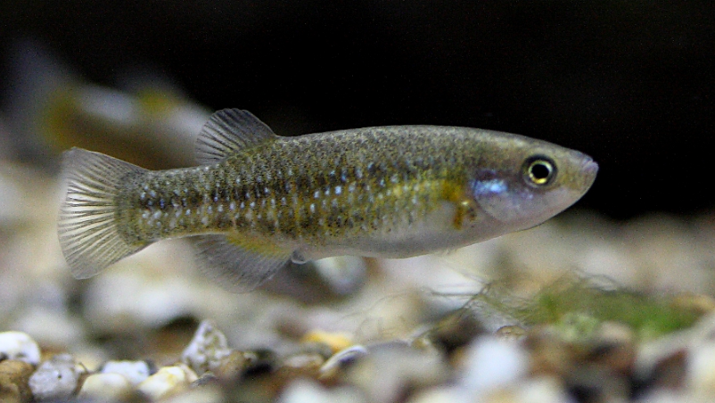

Systématique
- Ordre : Cyprinodontiformes
- Famille : Goodeidae
- Genre : Crenichthys
- Espèce : C. baileyi
- Auteur : (Gilbert, 1893)

Crenichthys baileyi est une espèce relique fascinante de la famille des Goodeidae. Contrairement aux membres de la sous-famille des Goodeinae, il appartient aux Empetrichthyinae, un groupe qui ne possède pas de trophotaeniae et qui est **ovipare**. Il est endémique d'un système complexe de sources thermales dans le désert du Nevada.
Il peut atteindre une taille de 6 à 9 cm selon la sous-espèce (on en compte cinq, dont C. b. baileyi et C. b. grandis). Le corps est robuste, assez haut et compressé latéralement. La coloration est généralement olive à argentée, marquée par deux rangées parallèles de taches sombres sur les flancs. Une caractéristique morphologique majeure est l'absence de nageoires pelviennes, une adaptation partagée avec le genre Empetrichthys.
L'espèce est classée comme "Vulnérable" à "En danger" selon les populations par l'UICN et le gouvernement fédéral américain. Son habitat est extrêmement fragile et menacé par l'introduction d'espèces non indigènes (comme les tilapias et les centrarchidés) ainsi que par le détournement des eaux souterraines.
Crenichthys baileyi est un poisson adapté à des conditions extrêmes, notamment des températures d'eau très élevées et des niveaux d'oxygène dissous parfois très bas. Il habite les sources thermales où il nage souvent en petits groupes parmi la végétation dense et les algues.
En raison de son métabolisme adapté aux eaux chaudes, c'est un poisson très actif et constamment en recherche de nourriture. Il peut se montrer territorial, surtout les mâles en période de frai, mais reste globalement sociable si l'espace est suffisant.
Mode : Ovipare.
Contrairement à la majorité des Goodeidés connus en aquariophilie, cette espèce pond des œufs. La ponte a lieu généralement tout au long de l'année dans les sources thermales stables. Les œufs sont déposés sur la végétation aquatique ou les algues filamenteuses.
L'incubation dure environ 5 à 10 jours selon la température. Les alevins sont petits à la naissance par rapport aux espèces vivipares de la famille et nécessitent des micro-nourritures (infusoires, puis nauplies d'artémias). La reproduction en captivité est considérée comme difficile et rarement documentée en dehors des centres de conservation spécialisés.
Dimorphisme sexuel : Peu marqué comparé aux Goodeinae. Les mâles sont généralement plus sveltes et peuvent présenter des couleurs plus intenses ou des liserés plus sombres sur les nageoires impaires lors du frai. Les femelles sont plus grandes et ont un abdomen plus arrondi.
Espérance de vie : 3 à 5 ans, bien que les données précises en captivité soient rares.
L'espèce peuple les sources thermales et les cours d'eau associés au système de la White River Valley dans le sud-est du Nevada, USA. Ces sources maintiennent des températures constantes, souvent comprises entre 27°C et 32°C, bien que certaines populations survivent dans des eaux légèrement plus fraîches ou plus chaudes.
L'eau est généralement claire, avec un pH alcalin et une dureté importante due aux minéraux dissous. La végétation est dominée par des algues thermophiles et des plantes aquatiques capables de tolérer ces températures élevées. Le substrat est un mélange de sable, de gravier et de carbonate de calcium précipité.
Répartition

Origine naturelle :
- États-Unis : Nevada (White River Valley et système de Pahranagat Valley).
- Cinq sous-espèces localisées dans des systèmes de sources isolés (ex: Ash Springs, Crystal Springs).
- Endémique strict du désert du Grand Bassin.
Sa distribution est naturellement fragmentée par le désert environnant, rendant chaque population isolée génétiquement.
Paramètres de maintenance
Température : 24 à 30 °C. Une température élevée est nécessaire pour simuler son habitat thermal.
pH : 7,5 à 8,2.
GH : 15 à 25 °dGH.
Courant : Faible à modéré.
Volume conseillé : 100–120 L pour un groupe. Une excellente filtration est requise pour maintenir une eau très propre malgré les températures hautes.
Régime alimentaire
Régime : Omnivore opportuniste.
Dans la nature, il consomme des algues, des petits invertébrés, des larves d'insectes et des ostracodes. En aquarium, il nécessite un apport régulier en matière végétale (spiruline, algues) complété par des nourritures carnées (congelé ou vivant).